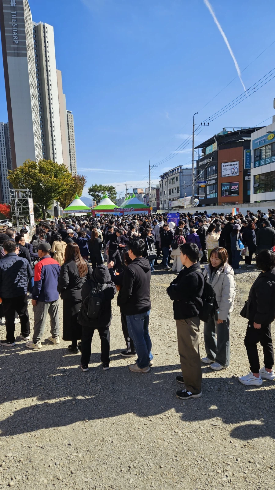

김밥 아작 냈으니 이젠 라면 아작 내러 온듯

김밥 아작 냈으니 이젠 라면 아작 내러 온듯
김밥이랑 라면은 세트야
해물 꽃게 라면 있나? .. 꼬냑이랑 먹으면 진짜 맛있는데
한마 유지로임?
왜 라면이지? 구미는 마이"구미" 축제해야 하는 거아냐?
구미에 농심 라면공장있음
위 사진은 공장에서 바로 나온 라면을 구매하는 줄
구미에 라면공장들이 좀있어서
갓튀긴라면<<체험가능
갓 잡은 라면이 글케 맛있다 안카요
구미가 당기네

부산 라면축제꼴 안나기를...
이미 전년도에 대히트해서 이번에 더잘될걸?
저건 시랑 대기업끼고 이미 몇 년 된 축제라
거기는 짜바리가 어줍잖게 한거고, 여기는 시 주관에다가 농심이 눈에 불켜고 하는거라 잘돼있음
부스들은 다 구미에서 요식업하는 사장들이고, 현장 통제하는 경찰이랑 봉사자분들도 많음
부산라면축제는 슈킹용 축제고
구미라면축제는 대기업 홍보겸 축제라 다름
구미라면축제는 유서깊은 축제임ㅋㅋ
나루토 미수화 코스프레하고 가면 무수한 악수요청 오려나 (퍽)
구미카...? 스바라시 요다나
저거 시작하고 농심라면맛이 좀 돌아오긴했지
내일 가고싶다
라면 아작나
우주에서도 라면먹으려고 내려오나보다.
뭐가 젤 맛있냐 낼 가려고하는데
떡튀순 축제는 없는가
떡볶이, 각종 튀김에, 온갖 종류 순대까지... 으아아아아아!!!!
대구에 떡볶이 축제 있음. 겸사겸사 튀김이랑 순대같은것도 같이 팔더라
댓글 읽고 침 고임 츄릅

두개 합쳐서 하면 개꿀인데? 라면에 김밥
크 김천구미콜라보 김구축제 응?
와 사람 진짜 많네 ㅋㅋㅋㅋ
김천에 김밥, 구미에 라면, 대구에 떡볶이... 거기에 부산에 부캉이... 그외 다른 도시들 단풍, 기타 등등 잘나가는 축제 한그득인데 여수는 뭔 깡으로 가을에 박람회를 연거냐 ㅋㅋ
ㅋㅋ ㄹㅇ
야 너두? 방금 도착했는데 무슨라면이 맛있음?
대전도 곧 누들축제하는데 ㄷㄷ
축제를 무슨 도장깨기 마냥 ㅋㅋㅋ
김천, 해미 읍성, 구미 레츠고
오늘존나춥던데
추운데서 기다리고 라면 한젓가락 딱 하면 존나 살살 녹겠네
자연산라면 ㄷㄷㄷ
구미 가서 라면 사왔다고 선물로 주길래 장난 치는줄 알았다 ㅋ
집에서 그냥 해먹을게요..
정보)구미 라면축제가 원래 더 사람 많았음
볼때마다 실물 경기 어렵다는데 이건 대체 뭐지라는 생각이 든다
대구 구미 김천
분식 축제 트라이앵글 미쳤네
김밥은 이것 저것 조금씩 먹을수있으니까 알겠는데 라면이 그게 되나? 라면을 축제 메인템으로도 쓸수 있나? 가본 사람?
그래서 반띵라면도 있음.
일단 농심공장이 구미에 있어서 당일 튀긴 라면으로 조리하는데다 당일 튀긴라면 제품도 판매함
가보면 사람들 죄다 라면 몇팩씩 둘러매고있었음(작년기준)
ㄷㄷ 갓 튀긴 라면
라면에 gummy를 왜 넣냐고
근처라 가보고 싶은데 교통이 헬이라 엄두가 안난다 ㅠㅠ
하아. 답읍따